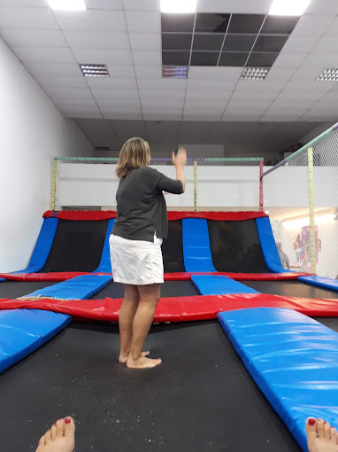
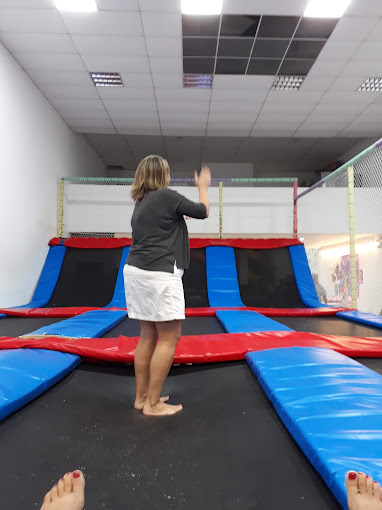

Trampolink Park
Nuestra Historia
Trampolink Park nació en el corazón de Concordia, Entre Ríos, como el sueño de una familia apasionada por crear experiencias únicas para chicos y grandes. Todo comenzó en el año 2018, cuando los hermanos Fernández, inspirados por un viaje a Europa donde visitaron un parque de trampolines, se dieron cuenta de que en su ciudad natal no existía un lugar así: un espacio donde la diversión, la seguridad y la celebración se combinaran.
Con mucho esfuerzo y el apoyo de amigos y emprendedores locales, lograron abrir el primer salón en 2019 en un pequeño galpón reacondicionado en Av. San Lorenzo. Lo que empezó con un par de camas elásticas y juegos simples, rápidamente se transformó en un éxito gracias al boca a boca y a la calidez del servicio.
En solo unos años, Trampolink Park fue creciendo. Incorporamos nuevas atracciones, ampliamos nuestras instalaciones y sumamos servicios personalizados como catering temático, animadores, decoración a medida y hasta shows en vivo. En 2022, abrimos nuestro segundo salón en otro punto clave de Concordia, reforzando nuestro compromiso con la comunidad y con cada familia que nos elige.
Hoy, Trampolink Park no solo es un lugar para festejar cumpleaños, sino un espacio donde los recuerdos cobran vida. Nuestra historia sigue saltando alto, impulsada por la alegría de cada niño, la confianza de cada papá y mamá, y el amor por lo que hacemos.
Nuestra Visión
En Trampolink Park soñamos con ser el espacio recreativo líder en Entre Ríos y más allá, donde cada celebración se transforme en una experiencia mágica, segura y memorable. Nuestra visión es crecer junto a la comunidad, innovando constantemente en propuestas de entretenimiento que fomenten la alegría, la conexión familiar y la creatividad, siendo reconocidos por nuestra calidad, calidez humana y compromiso con el bienestar de cada visitante.
Nuestra Misión
Brindar momentos de alegría, conexión y celebración a través de espacios especialmente diseñados para que todos puedan disfrutar y compartir.
Nuestro Compromiso
- Seguridad ante todo.
- Atención al cliente cercana y amable.
- Eventos únicos y memorables.
- Espacios inclusivos para todas las edades.
Galería
Mirá algunos momentos increíbles vividos en Trampolink Park


 
